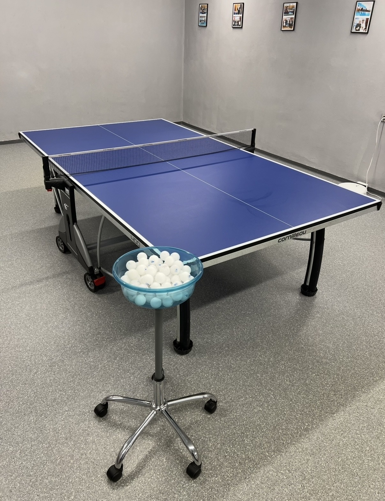

I started playing table tennis about four years ago. Like many beginners, my progress was slow at first, but my enthusiasm for the sport was huge.
From a single ball to proper practice
In the beginning, we trained with a single ball. The room had a hard floor, so every missed ball meant constantly bending down to pick it up. It interrupted the flow of practice immediately.
Later we bought a pack of JOOLA Flash balls, which are commonly used in local leagues and pro tournaments. As our skills improved, we naturally transitioned to multiball practice. We also realized that mixing different ball brands and weights was not a good idea: different brands varied in bounce and hardness, disrupting consistency.
When we bought the Pongbot Nova S Pro robot, we needed hundreds of balls. An original 72-ball set from JOOLA made training sessions far more consistent. Our small team eventually invested together in a supply of professional JOOLA Flash balls for robot work and regular training.
The idea for a DIY ball stand
Robot practice took our training sessions to the next level, and soon we were practicing in pairs. That brought a new challenge with storing 72 balls: working out of a cardboard box was impractical, and the box eventually tore apart since it wasn't designed to be moved around. I started looking on classifieds for discarded office chairs. In most cases, the castors and metal base are still fully functional.

After a little research, I found that office chairs usually feature a gas lift cylinder with a standard diameter. All I needed was a plastic or metal pipe that fit the dimensions perfectly and slid right over it.

How it all came together
I ordered two inexpensive plastic containers online from China, each holding around 100 table tennis balls. The final step was figuring out how to mount the container onto the plastic pipe. An old, broken IKEA lamp provided the ideal bracket.

The result is a sturdy ball stand built almost entirely from recycled parts. One container stays on the stand, while a second full container is stored in the cabinet. Before training, we simply place the full container on the stand and start playing.
From equipment to experience
If our sessions had been well-structured from day one, our level would have improved much faster. Over time, we also upgraded our rackets step by step until we reached professional blades and rubbers. Like many players, we bought, tested, and resold countless blades and rubbers—always, of course, taking a significant financial loss.
Looking back, I wish a tool like Racket Comparator had existed when we started playing four years ago. Instead of relying solely on marketing claims or forum posts, players can compare their current setup with the one they are considering. The comparison shows how different blades, rubbers, and thicknesses will alter the playing feel before spending money.
Sometimes the best outcome is realizing that a planned upgrade isn't actually an upgrade at all. Racket Comparator isn't just about comparing gear; it's about making more informed decisions, avoiding unnecessary purchases, and spending more time improving at the table.

COMPARE BEFORE YOU BUY